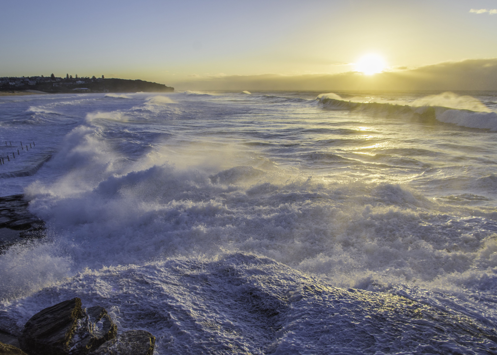

Interests

Surfing is a surface water pastime in which the wave rider, referred to as a surfer, rides on the forward part,
or face, of a moving wave, which usually carries the surfer towards the shore. Waves suitable for surfing are
primarily found in the ocean, but can also be found in lakes or rivers in the form of a standing wave or tidal
bore. However, surfers can also utilize artificial waves such as those from boat wakes and the waves created in
artificial wave pools. Mick Corbett at Cow Bombie in Western Australia
The term surfing usually refers to the act of riding a wave using a board, regardless of the stance. There are
several types of boards. The Moche of Peru would often surf on reed craft while the native peoples of the
Pacific, for instance, surfed waves on alaia, paipo, and other such craft. Ancient cultures often surfed on
their belly and knees while the modern-day definition of surfing, however, most often refers to a surfer riding
a wave standing on a surfboard; this is also referred to as stand-up surfing.
Another prominent form of surfing is body boarding, when a surfer rides the wave on a bodyboard, either lying on
their belly, drop knee (one foot and one knee on the board), or sometimes even standing up on a body board.
Other types of surfing include knee boarding, surf matting (riding inflatable mats), and using foils. Body
surfing, where the wave is surfed without a board, using the surfer's own body to catch and ride the wave, is
very common and is considered by some to be the purest form of surfing. The closest form of body surfing using a
board is a handboard which normally has one strap over it to fit one hand in.
Three major subdivisions within stand-up surfing are stand-up paddling, long boarding and short boarding with
several major differences including the board design and length, the riding style, and the kind of wave that is
ridden.
In tow-in surfing (most often, but not exclusively, associated with big wave surfing), a motorized water vehicle
such as a personal watercraft, tows the surfer into the wave front helping the surfer match a large wave's
speed, which is generally a higher speed than a self-propelled surfer can produce. Surfing-related sports such
as paddle boarding and sea kayaking do not require waves, and other derivative sports such as kite surfing and
windsurfing rely primarily on wind for power, yet all of these platforms may also be used to ride waves.
Recently with the use of V-drive boats, Wakesurfing, in which one surfs on the wake of a boat, has emerged. The
Guinness Book of World Records recognized a 23.8 m (78 ft) wave ride by Garrett McNamara at Nazaré, Portugal as
the largest wave ever surfed.